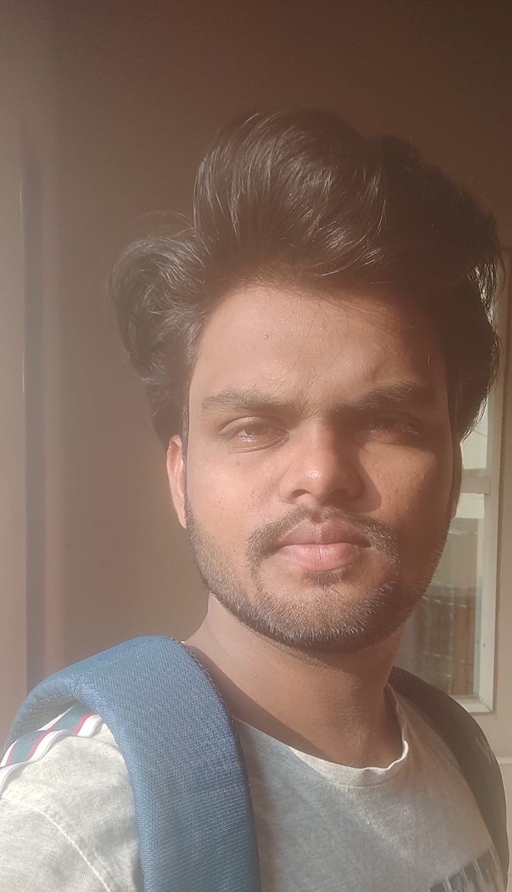

My Resume
Profile:

Summary:
- As a third-year Bachelor's student with an 80% in the Information Technology sector, I have developed skills in C, Python, and Frontend web development.I am seeking an internship to explore career options in the field of Information Technology.
- My experience working long hours individually and as part of a team in college projects makes me confident in my ability to contribute to your organization.
Education:
- Bachelor of Technology in Information Technology, SV College of Engineering, Tirupati, Andhra Pradesh, June 2024 (expected).
- Special projects in static and responsive website development Special projects in static and responsive website development.
- 8.0 CGPA with distinction.
- Intermediate Education (MPC), Sri Chaitanya College, Hyderabad, Telangana, January 2020.
- Developed communication and problem-solving skills.
- Scored 9.0 GPA
Work experience:
- Virtual Intern, Salesforce, Tirupati, Andhra Pradesh, October 2022 - December 2022
Developed flexibility, collaboration, communication, and time management skills in a completely virtual environment.
Skills:
- Programming languages: C, Python, Java.
- Frontend web development: HTML5, CSS3, Bootstrap.
- Operating Systems: Windows.
- Database Management Systems (DBMS).
- Effective communication and collaboration with team members.
Certifications:
- Learning C From Linkdlen.
- Hacker Rank Python.
- HTML5,css,Bootstrap from NxtWave Platform.
Other Profile Links:
Projects:
- Student Management Project Using C Language.
- Static Website Using HTML and CSS:
Static Website
- Responsive Website Using HTML5, CSS, and Bootstrap:
Responsive Website
My Hobbies
My Contact Info